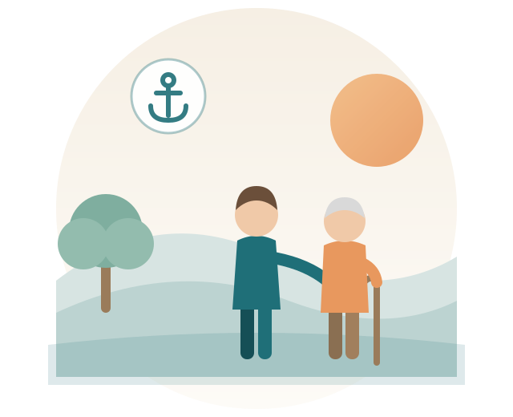

Ein verlässlicher Anker im Alltag
Alltagsanker begleitet Senior:innen in Bottrop, Gladbeck, Essen und Gelsenkirchen mit einfühlsamer, persönlicher Betreuung – damit der Alltag leichter und der Tag schöner wird.


Unterstützung, die zum Leben passt
Ob Gesellschaft, Begleitung zu Terminen oder Unterstützung im Haushalt – wir sind da, wo Hilfe gebraucht wird.
Alltagsbegleitung
Gemeinsame Zeit, Gespräche und Unterstützung bei kleinen und großen Dingen des Alltags.
Einkäufe & Erledigungen
Wir übernehmen Einkäufe, Botengänge und begleiten Sie gerne dabei.
Terminbegleitung
Sicher und verlässlich zu Arzt- oder anderen wichtigen Terminen.
Ihre Betreuung kann die Pflegekasse zahlen
Alltagsanker ist ein nach Landesrecht anerkanntes Angebot zur Unterstützung im Alltag. Damit können Sie unsere Betreuung über den Entlastungsbetrag nach § 45b SGB XI abrechnen.
- 131 € pro Monat – bereits ab Pflegegrad 1
- Für alle Pflegegrade gleich hoch, ohne Zuzahlung
- Nicht genutzte Beträge verfallen nicht sofort, sondern können angespart werden
- Wir helfen Ihnen gerne bei den Formalitäten
Sie sind sich unsicher, ob Ihnen der Betrag zusteht? Sprechen Sie uns an – wir schauen gemeinsam nach.
In Ihrer Nähe für Sie da
Wir sind in folgenden Städten für Sie unterwegs:
Gut zu wissen
Die Fragen, die uns am häufigsten gestellt werden. Ist Ihre nicht dabei? Fragen Sie uns einfach.
Was kostet die Betreuung?
In vielen Fällen übernimmt die Pflegekasse die Kosten: Über den Entlastungsbetrag nach § 45b SGB XI stehen Ihnen 131 € monatlich zu – bereits ab Pflegegrad 1.
Wenn kein Pflegegrad vorliegt, rechnen wir privat ab. Den Stundensatz besprechen wir vorab offen mit Ihnen, damit es keine Überraschungen gibt.
Wie läuft der erste Kontakt ab?
Sie schreiben uns über das Kontaktformular oder per E-Mail. Wir melden uns in der Regel innerhalb von 1–2 Werktagen zurück.
Danach lernen wir uns in Ruhe kennen – unverbindlich und kostenlos. Dabei besprechen wir, welche Unterstützung Sie sich wünschen und wann sie stattfinden soll.
Bekomme ich immer dieselbe Betreuungsperson?
Ja, das ist uns wichtig. Vertrauen entsteht durch Beständigkeit – deshalb betreuen wir Sie möglichst durchgehend mit derselben vertrauten Person.
Wie oft und wie lange kommen Sie?
Das richtet sich ganz nach Ihnen. Manche möchten einmal pro Woche ein paar Stunden Gesellschaft, andere brauchen mehrmals wöchentlich Unterstützung.
Die Termine stimmen wir gemeinsam ab und passen sie an, wenn sich Ihre Situation ändert.
Sind Sie auch in meiner Stadt tätig?
Wir sind in Bottrop, Gladbeck, Essen und Gelsenkirchen unterwegs. Wohnen Sie knapp außerhalb? Fragen Sie trotzdem gerne nach – oft finden wir eine Lösung.
Übernehmen Sie auch pflegerische Aufgaben?
Nein. Wir sind für die Betreuung und den Alltag da – Gesellschaft, Begleitung, Einkäufe und Unterstützung im Haushalt.
Medizinische oder körperbezogene Pflege übernimmt ein ambulanter Pflegedienst. Wir ergänzen diese Arbeit, ersetzen sie aber nicht.
Lernen wir uns kennen
Sie haben Fragen oder möchten Alltagsanker kennenlernen? Melden Sie sich gerne – unverbindlich und persönlich. Wir nehmen uns Zeit für Sie und Ihre Wünsche.
Kontakt aufnehmen